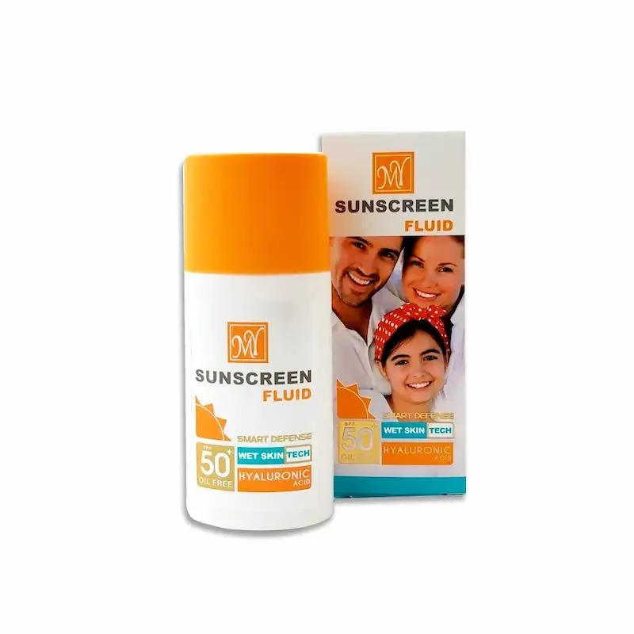

بررسی فلوئید ضدآفتاب MY Hyaluronic Acid حجم ۵۰ میلیلیتر
بررسی فلوئید ضدآفتاب مای مدل Hyaluronic Acid حجم ۵۰ میلیلیتر؛ SPF، نوع پوست، بافت و دستور مصرف همان نسخه را قبل از خرید تأیید کن.
آخرین بازبینی: ۲۶ مهر ۱۴۰۵ · تحریریه سنجو
این مدل را بررسی میکنی؟ قیمت امروز را قبل از ادامه ببین

قیمت، موجودی و شرایط فروشنده ممکن است تغییر کند؛ اطلاعات نهایی همان آگهی را قبل از خرید بررسی کن.
لینک همکاری در فروش است؛ برای خریدار هزینه اضافه ایجاد نمیکند.
این فلوئید برای چه کسی قابل بررسی است؟
اگر فرم فلوئید را ترجیح میدهی و حجم ۵۰ میلیلیتر برایت مناسب است، این مدل ارزش مقایسه دارد. عنوان محصول عبارت Hyaluronic Acid را دارد، اما نوع پوست هدف و سطح محافظت دقیق را باید از اطلاعات همان نسخه تأیید کنی.
قبل از خرید چه چیزهایی را حتماً ببینیم؟
- عدد SPF و علامتگذاری محافظت UVA روی بسته و آگهی
- بیرنگ یا رنگیبودن نسخه
- نوع پوست توصیهشده توسط سازنده
- ترکیبات، عطر و سازگاری با روتین فعلی
- تاریخ انقضا و اصالت کالا
در ضدآفتاب، مشخصات نسخه مهم است
اسم «Hyaluronic Acid» بهتنهایی برای انتخاب ضدآفتاب کافی نیست. اول محافظت اعلامشده و سازگاری با نوع پوست را بررسی کن، سپس بافت و حس استفاده روزانه را در نظر بگیر.
چه زمانی گزینه دیگری را بررسی کنیم؟
اگر به ضدآفتاب مخصوص پوست چرب، خشک یا رنگی نیاز داری و آگهی این نسخه آن نیاز را صریح تأیید نمیکند، از روی فرم فلوئید حدس نزن و مدل دیگری را هم مقایسه کن.
جمعبندی ارزش خرید
حجم ۵۰ میلیلیتر و فرم فلوئید مشخصاند؛ اما ارزش خرید نهایی به SPF/UVA واقعی نسخه، سازگاری با پوست و قیمت روز بستگی دارد.
قیمت و موجودی امروز
قیمت و موجودی ثابت نیست. مشخصات دقیق همین مدل، فروشنده، شرایط مرجوعی و محتویات بسته را در آگهی نهایی دوباره بررسی کن.
این صفحه شامل لینک همکاری در فروش است؛ ممکن است سنجو از خرید واجد شرایط کمیسیون دریافت کند.
پرسشهای رایج
آیا پرفروشبودن بهتنهایی دلیل کافی برای خرید است؟
نه. پرفروشبودن فقط یک سیگنال اولیه است. مدل دقیق، نیاز واقعی، قیمت روز، شرایط فروشنده و جزئیات آگهی را کنار هم بسنج.
آیا مشخصات فروشگاه ممکن است تغییر کند؟
بله. قیمت، موجودی و حتی جزئیات نسخه عرضهشده میتواند تغییر کند؛ صفحه فروشگاه مرجع تصمیم نهایی است.